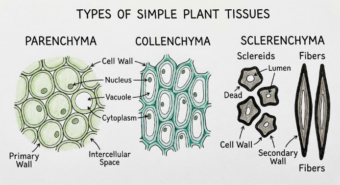
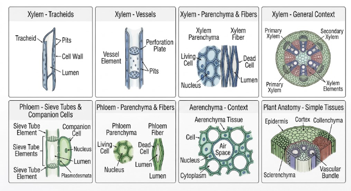
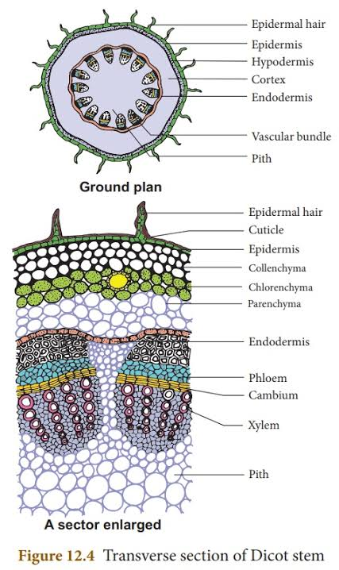
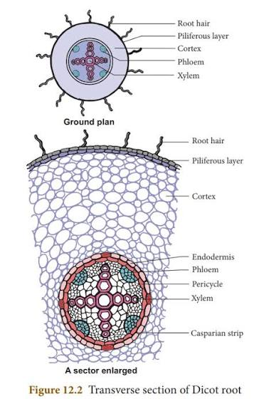
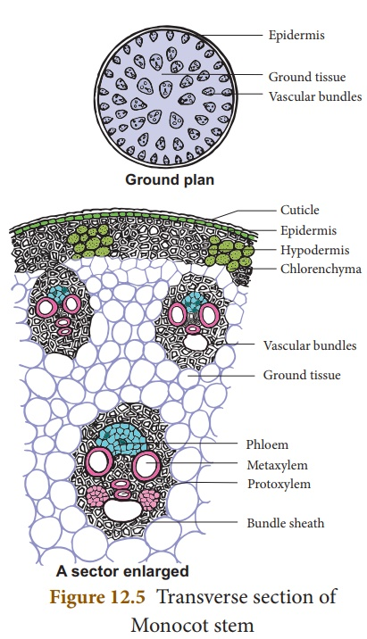

Plant Anatomy — meristematic & permanent tissues, xylem/phloem, and internal structure of dicot & monocot organs
Definition
Tissue (coined by Grew): a group of cells having a similar origin, structure and function.
Tissues are classified along two independent axes:
By constitution of cells: Simple (made up of similar cells) or Complex (made up of two or more types of cells)
By capacity of division: Meristematic or Permanent
Meristematic Tissue
A group of cells which remain in a continuous state of division, or retain their power of division. Composed of immature cells; intercellular spaces are usually absent. Cells may be rounded, oval, or polygonal.
Meristematic tissues are classified on the basis of origin, position, and function:
On the basis of origin
Primordial meristem (promeristem)
originates from the embryo; found at the apices of shoots and roots
Primary meristem
originates from the promeristem; found below it at shoot and root apices
Secondary meristem
not present from the start of organ formation but develops later; gives rise to secondary permanent tissues
On the basis of position
Apical meristem
present at the growing points/apices of stems, roots and branches; adds to the length of the plant or its parts
Intercalary meristem
the portion of apical meristem separated from the apex during growth, remaining intercalated between permanent cells
Lateral meristem
present along the side of the stem; produces new vascular tissue on either side and adds to thickness
On the basis of function
Protoderm
outermost meristematic cells; give rise to the epidermis of developing organs
Procambium
innermost meristematic cells; give rise to primary vascular tissue by differentiation
Ground meristem
gives rise to hypodermis, cortex, endodermis, pericycle, pith and medullary rays
Permanent Tissue
A group of cells that has lost the power of division and growth, and has attained a definite form and size. Cells may be dead or living, thin-walled or thick-walled.
Fig. 1 — classification of permanent tissue
Simple Permanent Tissues
Parenchyma
Thin-walled living cells, oval, spherical or polygonal in shape
Walls made of cellulose, hemicellulose and pectin
Contain a large vacuole, with intercellular spaces between cells
May contain chloroplasts and carry out photosynthesis
Serve mainly for storage of food (starches, proteins, oils and fats)
Collenchyma
Thick-walled living cells; thickening due to deposition of hemicellulose and pectin
May contain chloroplasts and carry out photosynthesis
Occurs in the stem of herbaceous dicotyledons and forms hydathodes
Provides both mechanical strength and flexibility; prevents tearing of leaves at the margin
Sclerenchyma
Thick-walled dead cells with a purely mechanical function — give strength and rigidity to the plant body
Two types: fibres (long, tapering at the ends, present in xylem of stem and roots) and sclereids (extremely thick-walled, spherical/oval/cylindrical, generally found in hard parts of the plant)

Fig. 2 — simple permanent tissues: parenchyma, collenchyma and sclerenchyma
Complex Permanent Tissues
Xylem
A complex tissue mainly responsible for conduction of water; also known as wood. Composed of four kinds of cells: tracheids, vessels, xylem parenchyma and xylem fibres.
Depending on time of origin relative to growth of the organ, xylem is of two types:
Protoxylem
Metaxylem
Formed
Early
Late
Vessels
Narrow
Large
Persistence
Short period
Long period
Fibres
Absent or rare
Often occur
Phloem
A living complex tissue; its main function is to transport organic food inside the plant body — from the leaves to storage organs, and from storage organs to various parts. Consists of four types of elements: sieve tubes, companion cells, phloem parenchyma and bast fibres.
Primary phloem
develops from procambium; does not have radial differentiation
Secondary phloem
develops from cambium during secondary growth; shows radial differentiation

Fig. 3 — complex permanent tissues: xylem and phloem
Key Differences
Xylem vs. Phloem
XylemPhloem
Conducts water & sap
Conducts organic food
Provides mechanical strength
No mechanical function
Conducting cells are dead
Conducting cells are living
Conducting cells have lignin on their walls
Conducting cells don't have lignin
Two types of conducting elements — vessels & tracheids
One type of conducting element — sieve tubes
Usually found deep in the plant
Usually found towards the outer side
Meristematic vs. Permanent Tissue
Meristematic TissuePermanent Tissue
Simple tissue
May be simple or complex
Cells small & isodiametric
Cells of variable shape & size, depending on function
Intercellular spaces absent or very small
Intercellular spaces often conspicuous
Vacuoles very small or absent
Living cells usually possess a large vacuole
Metabolic activity high
Metabolic activity occurs at a low rate
Cells able to divide repeatedly
Cells normally cannot divide
Immature & undifferentiated
Fully differentiated
Internal Structure of Dicot Stem

Fig. 4 — T.S. of a dicot stem
Epidermis
the outermost layer — a single row of parenchymatous cells, often bearing multicellular hairs and scattered stomata, coated in a waxy cuticle that keeps out fungal spores and bacteria, cuts down water loss, and leaves the stomata as the planned route for gas exchange.
Hypodermis
4–5 layers of collenchymatous cells just under the epidermis, their walls thickened at the corners with cellulose and pectin; the cells often carry chloroplasts, so the layer doubles as mechanical support and a bit of extra photosynthetic tissue.
General cortex
several layers of thin-walled, loosely packed parenchyma — oval, rounded or angular — with genuine intercellular spaces between them; its main job is simply storing food.
Endodermis
a single ring of barrel-shaped cells with no intercellular spaces, just inside the cortex. These cells are typically loaded with starch grains, which is why the layer is also called the starch sheath.
Pericycle
immediately inside the endodermis — a mix of sclerenchymatous cells with highly lignified walls (mechanical strength) and parenchymatous cells scattered between them (food storage).
Vascular bundles
conjoint, collateral and open — phloem sits to the outside, xylem to the inside, with a strip of cambium between them that keeps the option of secondary growth open, unlike the closed bundles of a monocot stem. The bundles sit in a single ring around the stem. Within each one, the xylem is endarch: protoxylem (narrow, formed early) points toward the centre and metaxylem (wider, formed later) toward the periphery, built from tracheids, vessels, xylem parenchyma and xylem fibres. Phloem, lying just below the sclerenchymatous pericycle, is made of sieve tubes, companion cells and phloem parenchyma.
Pith
fills the centre of the stem — thin-walled parenchyma with generous intercellular spaces, used for food storage.
Medullary (pith) rays
radially elongated parenchyma cells running between neighbouring vascular bundles, connecting pith to cortex and helping move food, water and gases between the two.
Internal Structure of Dicot Root

Fig. 5 — T.S. of a dicot root
Epidermis / piliferous layer / rhizodermis
outermost layer of the root; compactly arranged, thin-walled, elongated parenchymatous cells with no distinct cuticle or stomata. Many epidermal cells produce thin tubular root hairs (hence "piliferous"/"epiblema" layer); these absorb water and minerals from the soil.
Cortex
below the epiblema; many layers of thin-walled parenchyma cells, rounded or angular, enclosing intercellular spaces for gas diffusion. Stores food and conducts water from the epiblema to inner tissues.
Endodermis
innermost layer; a single layer of barrel-shaped, compact parenchymatous cells with no intercellular spaces. Radial and tangential walls are thickened with lignin and suberin — the casparian strips/bands — which regulate movement of fluid and air into and out of the stele.
Pericycle
one or more layers of thin-walled parenchymatous cells just inside the endodermis; helps in secondary growth, and all lateral roots originate from here.
Conjunctive tissue
parenchyma lying between the xylem and phloem bundles; becomes meristematic during secondary growth and forms the major part of the cambium.
Vascular bundles
xylem and phloem bundles alternate around the pericycle on the same radius — "radial bundles" — numbering 2–6. Each xylem bundle has smaller protoxylem toward the periphery and larger metaxylem toward the centre (an exarch arrangement); xylem conducts water and minerals and gives mechanical strength, and is made of vessels and a few tracheids. Between adjacent xylem bundles sits a phloem bundle (sieve tubes, companion cells, phloem parenchyma), which conducts organic food from shoot to root.
Pith
centre of the root; a few compactly arranged, thin-walled parenchymatous cells.
Internal Structure of Monocot Stem

Fig. 6 — T.S. of a monocot stem
Monocot stems possess only primary permanent tissues, not arranged in concentric rings. A typical monocot stem consists of:
Epidermis
outermost single layer of small, thin-walled, somewhat barrel-shaped parenchymatous cells, tightly packed with no intercellular spaces; covered with a thick cuticle. Stomata are present; epidermal hairs (trichomes) are absent.
Hypodermis
just below the epidermis; a few layers of thick-walled, lignified sclerenchymatous cells with no intercellular spaces. Provides rigidity and mechanical strength.
Ground tissue
occupies almost the whole interior of the stem; parenchymatous cells, round or angular, enclosing intercellular spaces. Stores food, and some outer cells may contain chloroplasts and photosynthesize. There is no separation of this ground tissue into a distinct cortex, endodermis, pericycle and pith the way there is in a dicot stem — it's all one undifferentiated mass, with the vascular bundles embedded in it.
Vascular bundles
scattered irregularly through the ground tissue rather than arranged in a ring — an arrangement given its own name, atactostele. Each bundle is conjoint, collateral and closed: no cambium lies between the xylem and phloem, so (unlike a dicot stem) monocot stems normally show no secondary growth. Bundles toward the periphery are greater in number and smaller in size than those toward the centre. Each bundle is surrounded by a sheath of sclerenchyma cells called the bundle sheath, and consists of phloem toward the outer side and xylem toward the inner side.
Xylem (within each bundle)
Y-shaped, made up of bigger, pitted vessels of metaxylem forming the arms of the Y, and smaller, spiral or angular vessels of protoxylem below them. This is the same endarch orientation as a dicot stem — protoxylem toward the centre, metaxylem toward the periphery — just unrolled into scattered bundles instead of a ring. The lowest protoxylem element is often crushed by maturity, breaking down into a fluid-filled space called a lysigenous cavity (protoxylem cavity) at the base of the Y.
Phloem (within each bundle)
consists of sieve tubes, companion cells and a few phloem fibres — phloem parenchyma is absent.